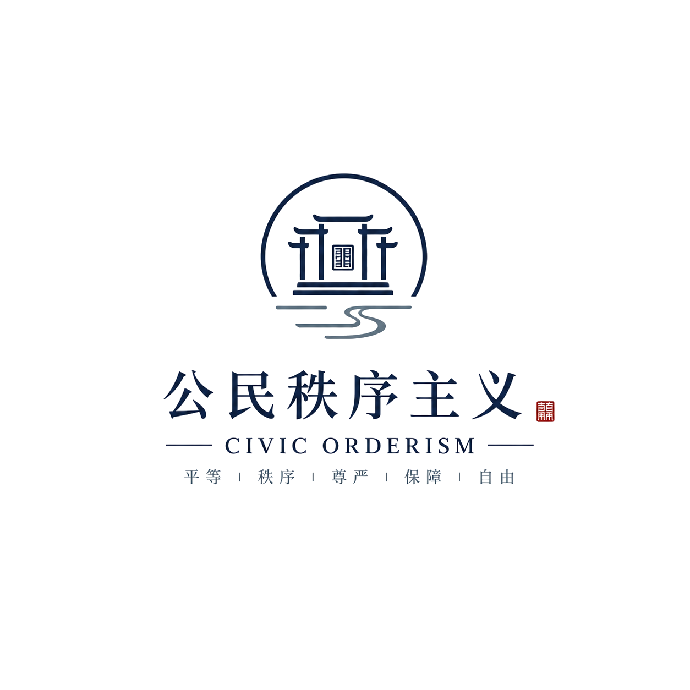

ARCHIVE
文章目录
这里用于持续整理公民秩序主义的理论总纲、制度设计、现实解析，以及关于公民秩序主义本身的说明。
首页每个栏目只显示最新两篇；这里保留全部文章。
理论总纲
THEORY制度设计
INSTITUTION待上传
现实解析
REALITY关于公民秩序主义
ABOUT CIVIC ORDERISM待上传

这里用于持续整理公民秩序主义的理论总纲、制度设计、现实解析，以及关于公民秩序主义本身的说明。